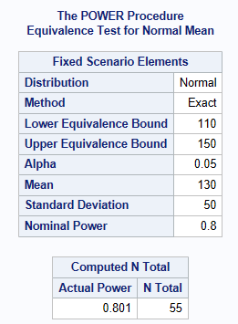
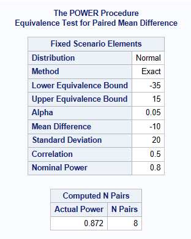

PROC POWER ;
onesamplemeans test=equiv
lower = 110
upper = 150
mean = 130
stddev = 50
ntotal = .
power = 0.8
alpha = 0.05;
RUN;Sample Size for Equivalence Trials in SAS
Introduction
PROC POWER1 can be used for sample size calculations for equivalence testing2. Note that equivalence testing is different to bioequivalence testing. For bioequivalence see TOST page. SAS can calculate equivalence testing sample size for:
One sample test: Is a mean equivalent to a target value, within a set tolerance
Two independent sample test: Comparison of means for equivalence, when the true mean difference is zero, but within a set tolerance.
One sample test: Is a proportion equivalent to a target value, within a set tolerance
Paired-sample test: Comparison of means for equivalence, within a set tolerance
PROC POWER CANNOT CALCULATE SAMPLE SIZE FOR:
Two independent sample test: Comparison of means for equivalence, when the true mean difference is non-zero, and within a set tolerance. (It will give you a result, but this doesn’t align to other software/books calculations)
Two independent sample test: Comparison of proportions for equivalence, when the true mean difference is zero or non-zero, and within a set tolerance
One Sample Equivalence Test of a Mean
For a mean \(\mu_1\), we are testing if \(\mu_1\) is equivalent to some value \(\theta\) within a tolerance of \(\delta\), in other words: \(H_0: |\mu_1| \leq \theta+\delta\) versus \(H_1: |\mu1|>\theta+\delta\)
A reformulation of a treatment pill, needs to have a weight equivalent to a target value of \(\theta\) =130 mg. Weight is assumed normally distributed and an acceptable weight is between 110 mg and 150 mg, hence \(\delta=20mg\). The standard deviation of the weight is 50 mg. What sample size is needed assuming an alpha level of 5% with 80% power to conclude the weight is within the margin \(\delta\) (the tablet weight is equivalent to 130 milligram). The below shows a sample size of 55 pills is required.

Two Sample Equivalence Test of Means
Comparing two independent sample means for parallel design (unpaired samples) where true difference between treatments is believed to be zero and within a tolerance
In the most common scenario, SDs are assumed known and the same in both treatment groups.
For a mean in group 1 of \(\mu_1\), and a mean in group 2 of \(\mu_2\), we are testing if the absolute difference between the treatments, \(|\mu_2-\mu_1|\) is equivalent to some value \(\theta\), within a tolerance of \(\delta\). In this example \(\theta =0\), in other words:
\(H_0:|\mu_2-\mu_1| \le \theta+\delta\) versus \(H_1: |\mu_2-\mu_1|\gt \theta+\delta\) (where \(\theta=0\) ) or
\(H_0:|\mu_2-\mu_1| \le \delta\) versus \(H_1: |\mu_2-\mu_1|\gt \delta\)
Example where \(\theta = 0\)
It is anticipated that patients will have the same mean diastolic BP of 96 mmHg on both the new drug and the active comparator, hence \(\theta=0\). It is also anticipated that the SD (\(\sigma\)) of the diastolic BP is approximately 8 mmHg. The decision is made by clinical to accept equivalence if the difference found between the treatments is less than 5 mmHg, hence \(\delta\)=5. How many patients are required for an 80% power and an overall significance level of 5%?
A total sample size of 90 is recommended, which equates to a sample size of 45 patients per treatment group. Notice how SAS asks for the lower and upper bounds, these are derived by using the meandiff \(\theta\)+/- the acceptable equivalence limit \(\delta\) (which is stated as 5 mmHg above).
PROC POWER ;
twosamplemeans test=equiv_diff
lower = -5
upper = 5
meandiff=0
stddev = 8
ntotal = .
power = 0.8
alpha = 0.05;
RUN;
Comparing two independent sample means for parallel design (unpaired samples) where true difference between treatments is believed NOT to be zero and within a tolerance
In the most common scenario, SDs are assumed known and the same in both treatment groups.
For a mean in group 1 of \(\mu_1\), and a mean in group 2 of \(\mu_2\), we are testing if the absolute difference between the treatments, \(|\mu_2-\mu_1|\) is equivalent to some value \(\theta\) within a tolerance of \(\delta\), in other words:
\(H_0:|\mu_2-\mu_1| \le \theta+\delta\) versus \(H_1: |\mu_2-\mu_1|\gt \theta+\delta\).
Example where \(\theta \neq 0\)
In this example, you would expect that you could apply similar code to above, but with lower & upper not equidistant from the mean difference, however, doing so does not give the right answer. If you consult SAS literature, it states that the below code is doing Two One-Sided Tests (TOST) Bioequivalence testing. To date, we have not been able to program equivalence with \(\theta \neq 0\) in SAS and get a sample size that matches the literature.
Instead of the hypothesis: \(H_0:|\mu_2-\mu_1| \le \theta+\delta\) versus \(H_1: |\mu_2-\mu_1|\gt \theta+\delta\).
The sample size calculation in this example is aligned to TOST hypotheses:
\(H_01: \mu_2 - \mu_1 \ge -\theta\) vs \(H_11:\mu_2-\mu_1 \lt -\theta\)
AND \(H_02: \mu_2 - \mu_1 \le \theta\) vs \(H_12:\mu_2-\mu_1 \gt \theta\)
See TOST page for more detail.
A client is interested in conducting a clinical trial to compare two cholesterol lowering agents for treatment of hypercholesterolemic patients through a parallel design. The primary efficacy parameter is a low-density lipidprotein cholesterol (LDL-C). For establishing equivalence, suppose the true mean difference is 0.01 (1%) and the equivalence limit is 0.05 (5%). Assuming SD = 0.1 (10%), how many patients are required for an 80% power and an overall significance level of 5%?
Below shows a sample size of 140 patients in Total (70 per treatment group).
PROC POWER ;
twosamplemeans test=equiv_diff
lower = -0.04
upper = 0.06
meandiff = 0.01
stddev = 0.1
ntotal = .
power = 0.8
alpha = 0.05;
RUN;
Comparing means for crossover design (paired)
Here we assume there is no carry-over effect and that the variance is known.
Estimating the within patient variance and correlation.
It is important to differentiate here between the within patient SD and the SD of the difference. We may need to recalculate one to the other, depending on the case.
With no carry-over, then an approximation could be: Variance of the difference = 2x Within Patient Variance. The variance within a patient can be estimated from the within subject residual mean square after fitting the model including visit, period and treatment. For example, using Proc mixed repeated visit / r sub=usubjid, and ods select r, gives you blocks of the estimate R matrix (covariances between residuals).
SAS cannot do sample size in this scenario without also having the within subject correlation. It’s common in this scenario to set this equivalent to 0.5. More investigation is required to determine why this is also need to be specified as in this scenario, the correlation should not be required.
Example
Let’s consider a standard standard two-sequence, two period crossover design for trials to establish therapeutic equivalence between a test drug and a standard therapy. The sponsor is interested in having an 80% power for establishing equivalence. Based on the results from previous trials, it is estimated that the variance (of the difference) is 0.2 (20%). Suppose that the true mean difference is -0.1 (-10%) and the equivalence limit is 0.25 (25%). What is the required sample size, assuming significance level of 5%?
The below shows a sample size of 8 patients is required.
PROC POWER;
pairedmeans test=equiv_diff
lower = -35
upper = 15
meandiff=-10
stddev = 20
npairs = .
corr=0.5
power = 0.8
alpha = 0.05;
RUN;
References
Version
─ Session info ───────────────────────────────────────────────────────────────
setting value
version R version 4.4.2 (2024-10-31)
os macOS Sequoia 15.6.1
system aarch64, darwin20
ui X11
language (EN)
collate en_US.UTF-8
ctype en_US.UTF-8
tz Europe/London
date 2025-08-29
pandoc 3.4 @ /Applications/RStudio.app/Contents/Resources/app/quarto/bin/tools/aarch64/ (via rmarkdown)
─ Packages ───────────────────────────────────────────────────────────────────
! package * version date (UTC) lib source
R sample_s_equivalence <NA> <NA> [?] <NA>
[1] /Users/christinafillmore/Documents/GitHub/CAMIS/renv/library/macos/R-4.4/aarch64-apple-darwin20
[2] /Library/Frameworks/R.framework/Versions/4.4-arm64/Resources/library
R ── Package was removed from disk.
─ External software ──────────────────────────────────────────────────────────
setting value
SAS 9.04.01M7P08062020
──────────────────────────────────────────────────────────────────────────────